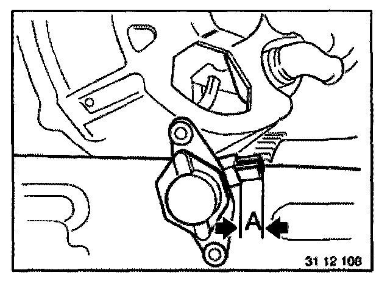
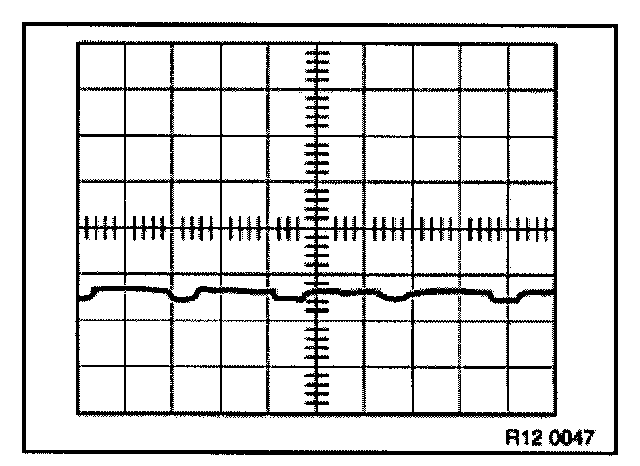

Oscilloscope Patterns and Waveforms
Checking Alternator And Regulator Switch
Test requirements:
- Correct connections on charged battery
- Correct connections on alternator and starter motor
- Good ground connection between engine and body
- Tightened drive belt
Connect DIS Tester.
- Measurement
- Checking alternator

If charge indicator lamp is permanently lit:
Remove voltage regulator and check carbon brushes, replace if necessary.
Replace alternator regulator switch.
NOTE: Minimum length of carbon brushes "A" 5 mm.
If charge indicator lamp goes out while engine is running:
Check control voltage.
Regulator switch must be replaced if control voltage is not achieved.
Replace alternator regulator switch.
Instructions for alternator disassembly.
From E46/E39 with multifunction regulator.
Recognizable: Plug connection on regulator.
Connect DIS Tester.
- Function selection
- Complete vehicle
- Drive
- Voltage and current regulation
- Voltage and current generation
- Work through test modules
Oscillogram for a fault-free alternator:
Oscillogram for a faulty alternator:
One phase interrupted.
Repair/exchange alternator.
Interturn fault.
Repair/exchange alternator.
Open circuit in negative diode.
Repair/exchange alternator.

Short circuit in positive diode.
Repair/exchange alternator.
Open circuit in positive diode.
Repair/exchange alternator.
Open circuit in exciter diode.
Repair/exchange alternator.